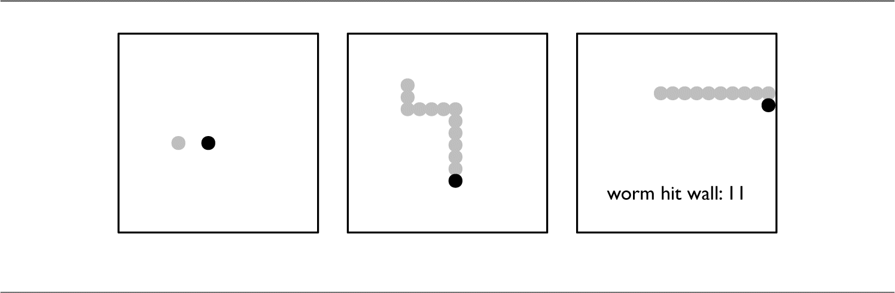
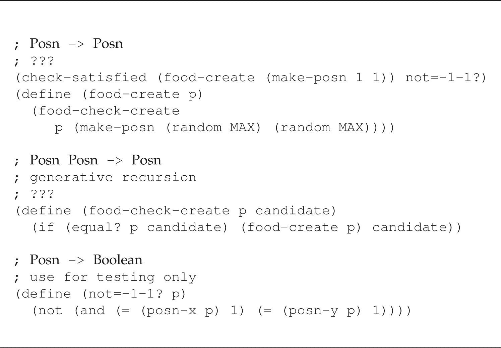

12.5 Feeding Worms
Worm—also known as Snake—is one of the oldest computer games. When the game starts, a worm and a piece of food appear. The worm is moving toward a wall. Don’t let it reach the wall; otherwise the game is over. Instead, use the arrow keys to control the worm’s movements.
The goal of the game is to have the worm eat as much food as possible. As the worm eats the food, it becomes longer; more and more segments appear. Once a piece of food is digested, another piece appears. The worm’s growth endangers the worm itself, though. As it grows long enough, it can run into itself and, if it does, the game is over, too.
Figure 79 displays a sequence of screen shots that illustrates how the game works in practice. On the left, you see the initial setting. The worm consists of a single red segment, its head. It is moving toward the food, which is displayed as a green disk. The screen shot in the center shows a situation when the worm is about to eat some food. In the right-most screen shot the worm has run into the right wall. The game is over; the player scored 11 points.

Figure 79: Playing Worm
The following exercises guide you through the design and implementation of a Worm game. Like chapter 10.2, these exercises illustrate how to tackle a nontrivial problem via iterative refinement. That is, you don’t design the entire interactive program all at once but in several stages, called iterations. Each iteration adds details and refines the program—until it satisfies you or your customer. If you aren’t satisfied with the outcome of the exercises, feel free to create variations.
Exercise 215. Design a world program that continually moves a one-segment worm and enables a player to control the movement of the worm with the four cardinal arrow keys. Your program should use a red disk to render the one-and-only segment of the worm. For each clock tick, the worm should move a diameter.
Hints (1) Reread chapter 3.6 to recall how to design world programs. When you define the worm-main function, use the rate at which the clock ticks as its argument. See the documentation for on-tick on how to describe the rate. (2) When you develop a data representation for the worm, contemplate the use of two different kinds of representations: a physical representation and a logical one. The physical representation keeps track of the actual physical position of the worm on the canvas; the logical one counts how many (widths of) segments the worm is from the left and the top. For which of the two is it easier to change the physical appearances (size of worm segment, size of game box) of the “game”? 
Exercise 216. Modify your program from exercise 215 so that it stops if the worm has reached the walls of the world. When the program stops because of this condition, it should render the final scene with the text "worm hit border" in the lower left of the world scene. Hint You can use the stop-when clause in big-bang to render the last world in a special way.
Exercise 217. Develop a data representation for worms with tails. A worm’s tail is a possibly empty sequence of “connected” segments. Here “connected” means that the coordinates of a segment differ from those of its predecessor in at most one direction. To keep things simple, treat all segments—head and tail segments—the same.
Now modify your program from exercise 215 to accommodate a multi-segment worm. Keep things simple: (1) your program may render all worm segments as red disks and (2) ignore that the worm may run into the wall or itself. Hint One way to realize the worm’s movement is to add a segment in the direction in which it is moving and to delete the last one.
Exercise 218. Redesign your program from exercise 217 so that it stops if the worm has run into the walls of the world or into itself. Display a message like the one in exercise 216 to explain whether the program stopped because the worm hit the wall or because it ran into itself.
Hints (1) To determine whether a worm is going to run into itself, check whether the position of the head would coincide with one of its old tail segments if it moved. (2) Read up on the member? function.
Exercise 219. Equip your program from exercise 218 with food. At any point in time, the box should contain one piece of food. To keep things simple, a piece of food is of the same size as a worm segment. When the worm’s head is located at the same position as the food, the worm eats the food, meaning the worm’s tail is extended by one segment. As the piece of food is eaten, another one shows up at a different location.
Adding food to the game requires changes to the data representation of world states. In addition to the worm, the states now also include a representation of the food, especially its current location. A change to the game representation suggests new functions for dealing with events, though these functions can reuse the functions for the worm (from exercise 218) and their test cases. It also means that the tick handler must not only move the worm; in addition it must manage the eating process and the creation of new food.
Your program should place the food randomly within the box. To do so properly, you need a design technique that you haven’t seen before—so-called generative recursion, which is introduced in part V—so we provide these functions in figure 80. Before you use them, however, explain how these functions work—assuming MAX is greater than 1—and then formulate purpose statements.

Figure 80: Random placement of food
For the workings of random, read the manual or exercise 99.
Hints (1) One way to interpret “eating” is to say that the head moves where the food used to be located and the tail grows by one segment, inserted where the head used to be. Why is this interpretation easy to design as a function? (2) We found it useful to add a second parameter to the worm-main function for this last step, a Boolean that determines whether big-bang displays the current state of the world in a separate window; see the documentation for state on how to ask for this information.
Once you have finished this last exercise, you have a complete worm game. Now modify your worm-main function so that it returns the length of the final worm. Then use Create Executable (under the Racket menu) in DrRacket to turn your program into something that anybody can launch, not just someone who knows about BSL+.
You may also wish to add extra twists to the game, to make it really your game. We experimented with funny end-of-game messages, having several different pieces of food around, with placing extra obstacles in the room, and a few other ideas. What can you think of?